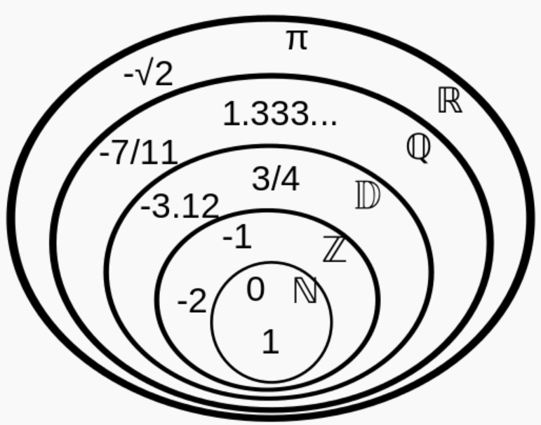

Ensembles de nombres – Arithmétique
1 Introduction
Les nombres que l’on connaît aujourd’hui sont partagés en 6 ensembles :
L’ensemble des entiers naturels est noté \mathbb{N}.
\mathbb{N}=\{0;1;2;\dots;105;\dots\}
L’ensemble des entiers relatifs est noté \mathbb{Z}.
\mathbb{Z}=\{\dots;-45;-44;\dots;-2;-1;0;1;2;3;\dots;208;\dots\}
L’ensemble des décimaux est noté \mathbb{D}. Ce sont les nombres qui ont un nombre fini de chiffres après la virgule.
Par exemple, 12{,}6523 et \dfrac{1}{4} sont des décimaux, mais \dfrac{1}{3}=0{,}3333\dots n’est pas un décimal.
L’ensemble des rationnels est noté \mathbb{Q}. Ce sont les quotients de deux entiers relatifs (non nul pour le dénominateur).
Par exemple, \dfrac{4}{-5}=-\dfrac{4}{5} est un rationnel.
L’ensemble de tous les nombres que vous connaissez est noté \mathbb{R}, l’ensemble des nombres réels.
L’ensemble des irrationnels est constitué des nombres réels qui ne sont pas rationnels. Il est noté \mathbb{I}=\mathbb{R}\setminus\mathbb{Q}.
Par exemple, \sqrt{2}, \sqrt{3}, \pi, \dots sont des irrationnels.

Pour signifier qu’un élément appartient à un ensemble, on utilise le symbole \in.
- 4\in\mathbb{N} signifie que 4 appartient à l’ensemble des entiers naturels.
- \dfrac{1}{2}\notin\mathbb{Z} signifie que \dfrac{1}{2} n’appartient pas à l’ensemble des entiers relatifs.
Pour signifier qu’un ensemble est inclus dans un autre, on utilise le symbole \subset.
- \mathbb{N}\subset\mathbb{Z} signifie que tout entier naturel est aussi un entier relatif.
- \mathbb{Z}\subset\mathbb{D} signifie que tout entier relatif est aussi un décimal.
- \dots
2 Ensemble des décimaux
2.1 Définitions
L’ensemble des nombres pouvant s’écrire sous la forme \dfrac{a}{10^n} avec a\in\mathbb{Z} et n\in\mathbb{N} est appelé ensemble des nombres décimaux. Cet ensemble est noté \mathbb{D}.
Montrer que -1{,}23\in\mathbb{D}, \dfrac{19}{40}\in\mathbb{D} et \dfrac{1}{3}\notin\mathbb{D}.
1. -1{,}23 est un décimal car -1{,}23=\dfrac{-123}{100}=\dfrac{-123}{10^2}.
-1{,}23 est bien un décimal car il s’écrit sous la forme \dfrac{a}{10^n} avec a=-123 et n=2.
2. \dfrac{19}{40} est un décimal car \dfrac{19}{40}=\dfrac{19\times 25}{40\times 25}=\dfrac{475}{1000}=\dfrac{475}{10^3}.
\dfrac{19}{40} est bien un décimal car il s’écrit sous la forme \dfrac{a}{10^n} avec a=475 et n=3.
3. \dfrac{1}{3} n’est pas un décimal car on ne peut pas l’écrire sous la forme \dfrac{a}{10^n} avec a\in\mathbb{Z} et n\in\mathbb{N}.
Pour le démontrer, on utilise une démonstration par l’absurde :
Supposons au contraire que \dfrac{1}{3}\in\mathbb{D}. Il existe donc a\in\mathbb{Z} et n\in\mathbb{N} tels que \dfrac{1}{3}=\dfrac{a}{10^n}.
Ainsi, 10^n=3a et donc 10^n est divisible par 3.
Or, pour être divisible par 3, la somme des chiffres d’un entier doit être un multiple de 3. Or la somme des chiffres de 10^n est 1 et 1 n’est pas un multiple de 3. On arrive donc à une contradiction.
2.2 Encadrer et arrondir à l’aide d’un décimal
Encadrer un nombre x, c’est trouver deux nombres a et b tels que a<x<b.
La différence b-a est appelée l’amplitude de l’encadrement.
Arrondir un nombre, c’est lui trouver la valeur décimale la plus proche à une précision donnée.
- Donner un encadrement d’amplitude 10^{-3} de \sqrt{2}.
- Donner une valeur approchée à 10^{-1} de \pi.
- 1{,}414\leqslant\sqrt{2}\leqslant 1{,}415 est un encadrement d’amplitude 10^{-3} de \sqrt{2}. En effet : 1{,}415-1{,}414=0{,}001=10^{-3}.
- 3{,}1 est une valeur approchée de \pi à 10^{-1}.
3 Ensemble des entiers naturels et relatifs
3.1 Multiples, diviseurs d’un nombre
a désigne un nombre de \mathbb{Z} et b un nombre de \mathbb{N} non nul (a\in\mathbb{Z}, b\in\mathbb{N}^*).
Dire que a est un multiple de b signifie qu’il existe un entier relatif k (k\in\mathbb{Z}) tel que a=k\times b.
On dit aussi que b est un diviseur de a ou que a est divisible par b.
- -8 est un multiple de 4 car -8=-2\times 4. Ainsi, -8 est divisible par 4 ou 4 est un diviseur de -8.
- 5 n’est pas un multiple de 2. En effet, 5=2{,}5\times 2, mais 2{,}5\notin\mathbb{Z}.
Soit b\in\mathbb{N}.
La somme de deux multiples de b est un multiple de b.
Soit b\in\mathbb{N}. Soit a et a' deux multiples de b. Il existe alors deux entiers relatifs k et k' tels que :
- a=k\times b, k\in\mathbb{Z}
- a'=k'\times b, k'\in\mathbb{Z}
Alors a+a'=k\times b+k'\times b=(k+k')\times b avec k+k'\in\mathbb{Z}. Donc a+a' est bien un multiple de b.
On considère b=4. Alors 8 et 12 sont des multiples de 4 (8=4\times 2 et 12=4\times 3). 8+12=20 est alors un multiple de 4. En effet, 20=4\times 5.
3.2 Nombres pairs, nombres impairs
- Un nombre pair est un nombre entier multiple de 2. Autrement dit, a\in\mathbb{Z} est pair s’il existe k\in\mathbb{Z} tel que a=2\times k.
- Un nombre impair est un nombre entier qui n’est pas un multiple de 2. Autrement dit son reste dans la division euclidienne par 2 est 1. Ainsi, a\in\mathbb{Z} est impair s’il existe k\in\mathbb{Z} tel que a=2k+1.
- Le produit de deux nombres est pair si au moins l’un de ces deux nombres est pair.
- Le produit de deux nombres impairs est impair.
- La somme de deux nombres de même parité est paire.
Soit a et b deux entiers.
Produit de deux nombres dont l’un est pair
Si a est pair, alors par définition, il existe un entier k tel que a=2k.
Le produit ab s’écrit alors :
ab=(2k)b=2(kb)
Puisque k et b sont des entiers, leur produit kb est aussi un entier. Ainsi, ab est de la forme 2\times(\text{un entier}), ce qui signifie que ab est pair.
Produit de deux nombres impairs
Soient a et b deux nombres entiers impairs.
Puisque a est impair, par définition, il existe un entier k tel que :
a=2k+1
Puisque b est impair, par définition, il existe un entier m tel que :
b=2m+1
Maintenant, calculons le produit ab :
\begin{align*} ab&=(2k+1)(2m+1) \\ &=4km+2k+2m+1 \\ &=2(2km+k+m)+1 \end{align*}
Posons K=2km+k+m. Puisque k et m sont des entiers, la somme et le produit d’entiers sont des entiers, donc K est également un entier.
L’expression du produit ab devient alors :
ab=2K+1
Par définition, tout nombre entier qui peut s’écrire sous la forme 2K+1 (où K est un entier) est un nombre impair.
Somme de deux nombres de même parité
Supposons que a et b sont tous les deux pairs.
Puisque a est pair, par définition, il existe un entier k tel que a=2k. Puisque b est pair, par définition, il existe un entier m tel que b=2m.
Maintenant, calculons la somme a+b :
\begin{align*} a+b&=2k+2m \\ &=2(k+m) \end{align*}
Posons K=k+m. Puisque k et m sont des entiers, leur somme k+m est aussi un entier. Donc K est un entier.
L’expression de la somme a+b devient alors a+b=2K. Par définition, tout nombre entier qui peut s’écrire sous la forme 2K (où K est un entier) est un nombre pair.
Supposons que a et b sont tous les deux impairs.
Puisque a est impair, par définition, il existe un entier k tel que a=2k+1. Puisque b est impair, par définition, il existe un entier m tel que b=2m+1.
Maintenant, calculons la somme a+b :
\begin{align*} a+b&=(2k+1)+(2m+1) \\ &=2k+2m+2 \\ &=2(k+m+1) \end{align*}
Posons K=k+m+1. Puisque k et m sont des entiers, leur somme k+m+1 est aussi un entier. Donc K est un entier.
L’expression de la somme a+b devient alors a+b=2K. Par définition, tout nombre entier qui peut s’écrire sous la forme 2K (où K est un entier) est un nombre pair.
Montrer que le carré d’un nombre pair est pair.
Soit a\in\mathbb{Z} pair. Alors il existe k\in\mathbb{Z} tel que a=2k. De plus a^2=(2k)^2=4k^2=2\times 2k^2. On pose K=2k^2 et alors a^2=2K. Donc a^2 est pair.
Montrer que le carré d’un nombre impair est impair.
3.3 Critères de divisibilité
(admise)
Un nombre entier est divisible :
- par 2 lorsque son chiffre des unités est 0, 2, 4, 6 ou 8 ;
- par 5 lorsque son chiffre des unités est 0 ou 5 ;
- par 3 lorsque la somme de ses chiffres est divisible par 3 ;
- par 9 lorsque la somme de ses chiffres est divisible par 9.
3.4 Nombres premiers
3.4.1 Définition
Un nombre premier est un entier naturel qui a exactement deux diviseurs : 1 et lui-même.
Liste des nombres premiers inférieurs à 65 :
2 ; 3 ; 5 ; 7 ; 11 ; 13 ; 17 ; 19 ; 23 ; 29 ; 31 ; 37 ; 41 ; 43 ; 47 ; 53 ; 59 ; 61
- 1 n’est pas un nombre premier car il n’admet qu’un seul diviseur : 1.
- 0 n’est pas un nombre premier car il est divisible par n’importe quel nombre entier non nul.
- 6 n’est pas un nombre premier car il est divisible par 1, 2, 3 et 6.
On dit que deux nombres entiers sont premiers entre eux lorsque les seuls diviseurs qu’ils ont en commun sont 1 et -1.
3.4.2 Décomposition en produit de facteurs premiers
(admise)
Tout nombre entier naturel supérieur ou égal à deux se décompose en produit de facteurs premiers et cette décomposition est unique (à l’ordre près des facteurs).
Décomposer 84 en produit de facteurs premiers.
Première méthode : à vue
On recherche le plus grand premier diviseur de 84 et on recherche ensuite tous les diviseurs premiers : 84=7\times 12. Or 12=4\times 3=2^2\times 3. Ainsi 84=2^2\times 3\times 7.
Deuxième méthode : on cherche les diviseurs premiers par ordre croissant
\begin{array}{r|l} 84 & 2 \\ 42 & 2 \\ 21 & 3 \\ 7 & 7 \\ 1 & \end{array}
- 84 est divisible par 2 : 84=2\times 42
- 42 est divisible par 2 : 42=2\times 21 donc 84=2\times 2\times 21
- 21 est divisible par 3 : 21=3\times 7 donc 84=2^2\times 3\times 7
- 7 est premier, donc la décomposition en produit de facteurs premiers est 84=2^2\times 3\times 7
4 Ensemble des rationnels
Un nombre rationnel est un nombre qui peut s’écrire sous la forme d’une fraction \dfrac{a}{b} avec a\in\mathbb{Z} et b\in\mathbb{Z}, b\neq 0.
\dfrac{1}{3}\in\mathbb{Q} ; \dfrac{14}{21}\in\mathbb{Q} et \dfrac{14}{21}=\dfrac{2}{3} ; \dfrac{2{,}5}{0{,}7}\in\mathbb{Q} car \dfrac{2{,}5}{0{,}7}=\dfrac{25}{7}.
Tout nombre rationnel non nul admet une unique écriture fractionnaire irréductible \dfrac{p}{q} où p et q sont premiers entre eux.
Donner l’écriture fractionnaire irréductible de \dfrac{25}{15} et de \dfrac{18}{45}.
- \dfrac{25}{15}=\dfrac{5\times 5}{3\times 5}=\dfrac{5}{3}. 5 et 3 sont premiers entre eux, donc l’écriture fractionnaire irréductible de \dfrac{25}{15} est \dfrac{5}{3}.
- \dfrac{18}{45}=\dfrac{9\times 2}{9\times 5}=\dfrac{2}{5}. 2 et 5 sont premiers entre eux, donc l’écriture fractionnaire irréductible de \dfrac{18}{45} est \dfrac{2}{5}.
(admise)
Un nombre rationnel admet un développement décimal périodique à partir d’un certain rang.
\dfrac{1}{3}=0{,}33333\dots3333\dots ; \dfrac{13193}{49950}=0{,}26412412412\dots412\dots ; 2=2{,}000\dots000\dots
5 Ensemble des réels
5.1 Généralités
Il existe des nombres qui n’ont pas un développement décimal périodique. C’est le cas par exemple du nombre \pi\approx 3{,}1416\dots Ils appartiennent à l’ensemble des irrationnels.
Les nombres qui ne peuvent pas être exprimés par une fraction sont dits irrationnels. On le note \mathbb{I}.
L’ensemble des réels \mathbb{R} est la réunion de l’ensemble des rationnels \mathbb{Q} et des irrationnels \mathbb{I}.
(admise)
- À tout point d’une droite graduée est associé un unique nombre réel, son abscisse.
- Réciproquement, à tout nombre réel est associé un unique point d’une droite graduée.
Le nombre réel \sqrt{2} est un irrationnel.
On raisonne par l’absurde. Supposons que \sqrt{2} soit rationnel.
Il existe alors deux entiers a\in\mathbb{N}^* et b\in\mathbb{N}^* tels que :
\sqrt{2}=\dfrac{a}{b} \quad\text{avec}\quad \operatorname{PGCD}(a,b)=1
En élevant au carré, on obtient :
2=\dfrac{a^2}{b^2} \implies a^2=2b^2 \quad\text{(1)}
Ainsi, a^2 est pair, ce qui implique que a est pair. Il existe donc un entier k\in\mathbb{N}^* tel que a=2k.
En substituant cette expression de a dans l’égalité (1) :
(2k)^2=2b^2 \implies 4k^2=2b^2 \implies b^2=2k^2
On en déduit que b^2 est pair, et donc que b est pair.
a et b étant tous les deux pairs, ils admettent 2 comme diviseur commun. Cela contredit le fait que la fraction \dfrac{a}{b} soit irréductible (\operatorname{PGCD}(a,b)=1).
Par conséquent, l’hypothèse de départ est fausse : \sqrt{2} est irrationnel.
5.2 Racine carrée
5.2.1 Définitions
Soit x un réel positif.
La racine carrée de x, notée \sqrt{x}, est l’unique nombre réel positif dont le carré est x.
Comme 2^2=4, on a \sqrt{4}=2. On a également \sqrt{0}=0 et \sqrt{1}=1.
La racine carrée d’un nombre négatif n’a pas de sens. En effet, il n’existe pas de nombre réel qui, mis au carré, est négatif.
- Pour tout nombre réel x positif, \left(\sqrt{x}\right)^2=x.
- Pour tout nombre réel x, \sqrt{x^2}=x si x\geqslant 0 et \sqrt{x^2}=-x si x<0.
\left(\sqrt{7}\right)^2=7 et \sqrt{(-5)^2}=5
5.2.2 Calculs
Soit a et b deux réels positifs avec b\neq 0.
- \sqrt{a\times b}=\sqrt{a}\times\sqrt{b}
- \sqrt{\dfrac{a}{b}}=\dfrac{\sqrt{a}}{\sqrt{b}}
On dit qu’une racine carrée (ou radical) admet une écriture simplifiée lorsque deux conditions sont remplies :
- Le nombre sous le radical est le plus petit entier possible. Cela signifie qu’il ne contient plus de facteurs carrés parfaits (autres que 1).
- Le dénominateur (s’il y en a un) est un nombre entier sans radical.
Donner les écritures simplifiées de \sqrt{12} et de \sqrt{\dfrac{27}{8}}.
1.
\sqrt{12}=\sqrt{4\times 3}=\sqrt{4}\times\sqrt{3}=\mathbf{2\sqrt{3}}
2.
\begin{align*} \sqrt{\dfrac{27}{8}}&=\dfrac{\sqrt{27}}{\sqrt{8}} \\ &=\dfrac{\sqrt{9\times 3}}{\sqrt{4\times 2}} \\ &=\dfrac{3\sqrt{3}}{2\sqrt{2}} \\ &=\dfrac{3\sqrt{3}\times\sqrt{2}}{2\sqrt{2}\times\sqrt{2}} \\ &=\dfrac{3\sqrt{6}}{2\times 2} \\ &=\mathbf{\dfrac{3\sqrt{6}}{4}} \end{align*}
5.3 Les puissances
Soit a un réel et m un entier.
- Si m>0, alors a^m=\underbrace{a\times a\times a\times a\times\dots\times a}_{m\text{ facteurs}}
- Si m<0, alors a^m=\dfrac{1}{a^{-m}}
- Par convention, pour a\neq 0, a^0=1
- 5^3=5\times 5\times 5=125
- 5^{-3}=\dfrac{1}{5^3}=\dfrac{1}{125}
Soit a et b deux réels non nuls et soit m et n deux entiers relatifs.
- a^m\times a^n=a^{m+n}
- (a^n)^m=a^{n\times m}
- (a\times b)^m=a^m\times b^m
- \left(\dfrac{a}{b}\right)^m=\dfrac{a^m}{b^m}
- \dfrac{a^m}{a^n}=a^{m-n}
Calculer :
- 2^3\times 2^2
- x\times x^2
- (3x)^2
- \left(\dfrac{2}{x^2}\right)^2
- \dfrac{4^5}{4^7}
- 2^3\times 2^2=8\times 4=32
- x\times x^2=x^1\times x^2=x^{2+1}=x^3
- (3x)^2=3x\times 3x=9x^2
- \left(\dfrac{2}{x^2}\right)^2=\dfrac{2^2}{(x^2)^2}=\dfrac{4}{x^4}
- \dfrac{4^5}{4^7}=4^{5-7}=4^{-2}=\dfrac{1}{4^2}=\dfrac{1}{16}